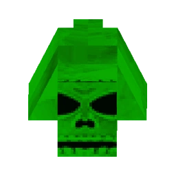

The Very Cancerous Rodent (VCR) is a scaled-up version of the Cancerous Rodent, with a face resembling a skull. Unlike its smaller counterpart, VCR can actually deal damage to V1. It fires bursts of green projectiles that home in on V1, similar to the projectiles fired by Mindflayers, Minos, and the Flesh Prison. These projectiles detonate on contact with the same damage as a Cerberus projectile, though with half the explosive radius.
Due to the tight confines of the arena, dodging these projectiles can be difficult. VCR does not move from its position but will turn to face V1’s direction, making it a more static yet dangerous opponent compared to its predecessor.
The Very Cancerous Rodent's primary attack consists of homing green projectiles that detonate on impact, causing substantial damage. The small arena presents a challenge in dodging these projectiles, so positioning and movement are key. VCR does not move, but it will constantly face V1, making it easier to predict its attack direction. Although VCR is not mobile, its ability to deal damage with its homing projectiles makes it a dangerous foe.
The Very Cancerous Rodent can be tricky to kill due to the small arena, but it’s not impossible. One effective strategy is to take cover behind the corner of the Dungeon exit and use the Attractor Nailgun to fire magnetized nails from a safe distance. Alternatively, you can use the Marksman Revolver to shoot from cover.
If you choose to fight VCR head-on, Shotgun Swapping, using the Overheat Nailgun, Parrying, and utilizing any of the Railcannon variants can all be effective tools for dealing damage. Ground slamming is another useful tactic to exploit VCR’s 2x weakness to ground slam damage. It takes 13 slams to defeat the VCR. You can maximize this tactic by holding the ground slam input after landing to avoid stamina consumption. Since ground slam shockwaves do not deal extra damage to enemies, mashing the slam input works efficiently for this strategy.
Another simple but effective tactic is to stand as close to the VCR’s face as possible. This will cause the green projectiles to detonate immediately as they appear, damaging VCR without harming or knocking back the player, thanks to collision detection quirks.